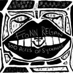
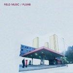
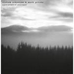

Music Reviews
-
Islands A Sleep & A Forgetting
The latest from the inevitably post-Unicorns band isn't exactly a rollicking affair, but there's something to be said for its steady pace and varied instrumentation.
Matt Montgomery reviews... -
Emeli Sandé Our Version of Events
Winner of the 2012 Brit Awards Critics' Choice award, Emeli Sandé deals mostly in down-tempo disappointment on her much-anticipated début, Our Version of Events.
Craig Stevens has been subjected to a barrage of ballads... -
Mark Lanegan Band Blues Funeral
Mark Lanegan returns with his first solo effort after eight years of collaborations and guest-spots. Has he learnt anything from his musical wanderings?
David John Wood reviews... -

Fionn Regan 100 Acres Of Sycamore
Fionn Regan's third is a return to the quiet and considered sound of his debut, and for the most part it's a joy to listen to.
Joel Stanier reviews... -

Field Music Plumb
One of the most unexpectedly thought-provoking albums in recent memory is filled with fragments of infectious and beautiful melodies, an experimental album structure, and an intriguing identity crisis. In the end, are we left with avant-garde appealing to the kitsch or kitsch masquerading as avant-garde?
Forrest Cardamenis debates... -

Ulrich Schnauss and Mark Peters Underrated Silence
Four years after Ulrich Schnauss' last full-length, the shoegaze-electronic maestro returns with Underrated Silence - a joint collaboration with Mark Peters of The Engineers. If you don't quite remember what The Engineers sound like, it won't matter here.
Ryan Pratt, hardcore Schauss-fan, weighs the hype... -
Sharon Van Etten Tramp
Sharon Van Etten's third release, Tramp, offers a matured and refigured take on life between records.
-
Tennis Young & Old
A collection of snapshots of love, loss and inertia which replace the naive magic of Cape Dory with a subtle anxiety and imbue the album with honesty without forgoing the charm.
David Zammitt reviews... -
Lindstrøm Six Cups Of Rebel
After making a name for himself with sleek and sophisticated "space-disco", Lindstrøm is experimenting with more ideas than ever before, sacrificing the space which made his previous work so special.
Stephen Wragg reviews... -

Dr. Dog Be the Void
Is Dr. Dog's degree in medicine or philosophy? How would he hold the stethoscope without opposable thumbs? Is the Philadelphia-based quintet's new album any good? Will this teaser end with a question?
Ben Jones gives the doctor a check-up...